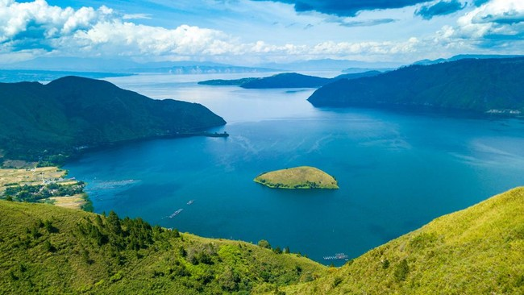

Blog Terbaru
Pesona Pantai Kuta di Bali
Pantai Kuta tak pernah gagal memukau pengunjungnya dengan keindahan matahari terbenam yang memukau. Cari tahu aktivitas seru di sini!
Baca SelengkapnyaMegahnya Candi Borobudur
Jelajahi keagungan Candi Borobudur, sebuah mahakarya arsitektur Buddha yang menjadi warisan dunia di Jawa Tengah.
Baca Selengkapnya

Pesona Danau Toba
Nikmati keindahan danau vulkanik terbesar di dunia dan kekayaan budaya Batak di Pulau Samosir.
Baca Selengkapnya